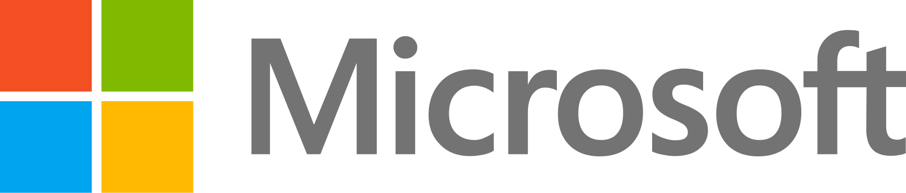

Microsoft Corporation is an American multinational technology conglomerate headquartered in Redmond, Washington.[2] Founded in 1975, the company became highly influential in the rise of personal computers through software like Windows, and the company has since expanded to Internet services, cloud computing, video gaming and other fields. Microsoft is the largest software maker, one of the most valuable public U.S. companies,[a] and one of the most valuable brands globally.
Microsoft was founded by Bill Gates and Paul Allen to develop and sell BASIC interpreters for the Altair 8800. It rose to dominate the personal computer operating system market with MS-DOS in the mid-1980s, followed by Windows. The company's 1986 initial public offering (IPO) and subsequent rise in its share price created three billionaires and an estimated 12,000 millionaires among Microsoft employees. Since the 1990s, it has increasingly diversified from the operating system market. Steve Ballmer replaced Gates as CEO in 2000 which would see the then-largest of Microsoft's corporate acquisitions in Skype Technologies in 2011,[3] and an increased focus on hardware[4][5] that led to its first in-house PC line, the Surface, in 2012, and the formation of Microsoft Mobile through Nokia. Since Satya Nadella took over as CEO in 2014, the company has changed focus towards cloud computing,[6][7] as well as its large acquisition of LinkedIn for $26.2 billion in 2016.[8] Under Nadella's direction, the company has also expanded its video gaming business to support the Xbox brand, establishing the Microsoft Gaming division in 2022, which is currently[b] the third-largest gaming company in the world by revenue,[9] following the 2023 acquisition of Activision Blizzard for $68.7 billion.[10]
Microsoft has been market-dominant in the IBM PC–compatible operating system market and the office software suite market since the 1990s. Its best-known software products are the Windows line of operating systems, the Microsoft 365 suite of productivity applications, the Azure cloud computing platform, and the Edge web browser. Its flagship hardware products are the Xbox video game consoles and the Microsoft Surface lineup of touchscreen personal computers. Other consumer and enterprise software it produces include Internet search with Bing; digital services through MSN; mixed reality through HoloLens; cloud computing with Azure; and software development through Visual Studio.
Microsoft is considered one of the Big Five American information technology companies, alongside Alphabet,[c] Amazon, Apple, and Meta.[d] In April 2019, Microsoft reached a trillion-dollar market cap, becoming the third public U.S. company to be valued at over $1 trillion. It has been criticized for its monopolistic practices, and the company's software has been criticized for problems with ease of use, robustness, and security.
History
1972–1985: Founding
An Altair 8800 computer (left) with the popular Model 33 ASR Teletype as terminal, paper tape reader, and paper tape punch
Paul Allen and Bill Gates on October 19, 1981, after signing a pivotal contract with IBM[11]: 228
Bill Gates and Paul Allen's Original Business Cards located in the Microsoft Visitor Center
Childhood friends Bill Gates and Paul Allen sought to make a business using their skills in computer programming.[12] In 1972, they founded Traf-O-Data, which sold a rudimentary computer to track and analyze automobile traffic data. Gates enrolled at Harvard University while Allen pursued a degree in computer science at Washington State University, though he later dropped out to work at Honeywell.[13] The January 1975 issue of Popular Electronics featured Micro Instrumentation and Telemetry Systems's (MITS) Altair 8800 microcomputer,[14] which inspired Allen to suggest that they could program a BASIC interpreter for the device. Gates called MITS and claimed that he had a working interpreter, and MITS requested a demonstration. Allen worked on a simulator for the Altair while Gates developed the interpreter, and it worked flawlessly when they demonstrated it to MITS in March 1975 in Albuquerque, New Mexico. MITS agreed to distribute it, marketing it as Altair BASIC.[11]: 108, 112–114 Gates and Allen established Microsoft on April 4, 1975, with Gates as CEO,[15] and Allen suggested the name "Micro-Soft", short for micro-computer software.[16][17] In August 1977, the company formed an agreement with ASCII Magazine in Japan, resulting in its first international office of ASCII Microsoft.[18] Microsoft moved its headquarters to Bellevue, Washington, in January 1979.[15]
Microsoft entered the operating system (OS) business in 1980 with its own version of Unix called Xenix,[19] but it was MS-DOS that solidified the company's dominance. IBM awarded a contract to Microsoft in November 1980 to provide a version of the CP/M OS to be used in the IBM Personal Computer (IBM PC).[20] For this deal, Microsoft purchased a CP/M clone called 86-DOS from Seattle Computer Products which it branded as MS-DOS, although IBM rebranded it to IBM PC DOS. Microsoft retained ownership of MS-DOS following the release of the IBM PC in August 1981. IBM had copyrighted the IBM PC BIOS, so other companies had to reverse engineer it for non-IBM hardware to run as IBM PC compatibles, but no such restriction applied to the operating systems. Microsoft eventually became the leading PC operating systems vendor.[21][22]: 210 The company expanded into new markets with the release of the Microsoft Mouse in 1983, as well as with a publishing division named Microsoft Press.[11]: 232 Paul Allen resigned from Microsoft in 1983 after developing Hodgkin's lymphoma.[23] Allen claimed in Idea Man: A Memoir by the co-founder of Microsoft that Gates wanted to dilute his share in the company when he was diagnosed with Hodgkin's disease because he did not think that he was working hard enough.[24] Allen later invested in low-tech sectors, sports teams, commercial real estate, neuroscience, private space flight, and more.[25]